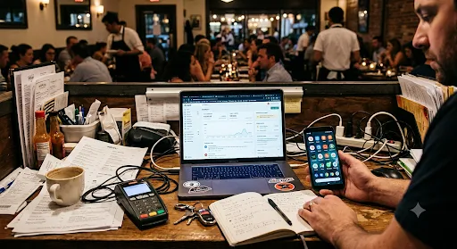
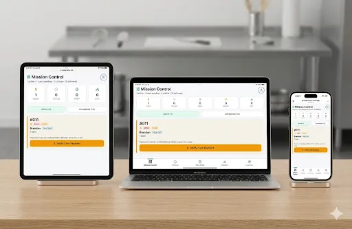

Shopify vs Restaurantes: Por Qué No Funciona

La Pregunta Que Nadie Quiere Hacer (Pero Todos Se Hacen)
Estás en Google. Buscás: "mejor sistema de pedidos online para restaurantes". O quizás "cómo poner mi restaurante online". O "POS para restaurantes que realmente funcione".
Encontrás Shopify. Está en todos lados. Se ve profesional. Parece la respuesta.
Después vas a Reddit. Buscás foros de dueños de restaurantes. Y ves las mismas preguntas una y otra vez:
"¿Shopify es bueno para restaurantes?"
"El POS de Shopify nos está matando. ¿Alguna alternativa?"
"Estoy pagando 10 apps solo para que Shopify funcione en mi cocina."
Los dueños de restaurantes buscan desesperadamente algo mejor. Y Shopify sigue apareciendo como "la solución" — aunque no fue construido para vos.
El Problema de Shopify: Hacer de Todo, No Dominar Nada
Shopify domina el e-commerce — más de 79 países, miles de millones en transacciones procesadas. Pero acá está el secreto: Shopify fue construido para vender remeras y zapatillas dropshipped, no comida.
Y todo dueño de restaurante que lo probó lo sabe.
Shopify no tiene un POS nativo. No tiene un KDS (sistema de pantalla de cocina). No se integra con delivery. No rastrea el estado del pedido en tiempo real. Entonces, ¿qué hacés? Le agregás apps. Muchas apps.
App de inventario. App de pantalla de cocina. Integración de delivery. Programa de fidelización. Procesador de pagos. Notificaciones por mensaje. Constructor de menú que funcione de verdad.
Hablamos de 12+ apps como mínimo. Cada una cuesta entre $20 y $100 por mes. Cada una es otro login, otro problema de sincronización, otro punto de falla cuando tus clientes piden en la hora pico y todo el sistema se cuelga.

La Diferencia FoodSpot: Construido Para Restaurantes, Desde el Día Uno
No empezamos tratando de construir la plataforma que hace de todo. Empezamos con una sola pregunta: ¿Qué necesita realmente un restaurante?
Respuesta: Una app. Un panel. Todo incluido.
Subís tu menú, ponés tus colores de marca, agregás tu logo. Construimos una app móvil personalizada que tus clientes descargan o acceden por link. Navegan. Piden. Pagan. Listo.
Mientras tanto, en tu cocina: actualizaciones de pedidos en tiempo real, pantalla de cocina, seguimiento de delivery, puntos de fidelización ganados automáticamente. Tus clientes ven el estado de su pedido en vivo. Vuelven porque son recompensados por hacerlo.
Y acá está la clave: Shopify todavía no tiene una app móvil nativa para restaurantes. Somos los primeros en hacer esto a escala. Vos tenés una experiencia completamente personalizada. Ellos todavía están tratando de meter un cuadrado en un círculo.
Sin Comisión No Es Solo Sobre el Precio
Sí, Shopify se queda con un porcentaje. 2.9% + 30¢ por transacción, además de las tarifas de procesamiento. Pero el costo real está escondido:
- Clientes perdidos porque tu POS se colgó en el almuerzo
- Pagar por 12 apps en lugar de 1 solución
- Tiempo gestionando integraciones en lugar de manejar tu negocio
- Sin programa de fidelización, los clientes se van a la competencia
Con FoodSpot, no hay comisión. Sin tarifas ocultas de apps. Sin licencias de POS. Solo vos, tus clientes, y un sistema construido para cómo realmente funcionan los restaurantes.
¿Listo para dejar de pagar por 12 apps?
Probá GetQRCamera gratis — Sin tarjeta de crédito. Sin compromiso. Mirá por qué los dueños de restaurantes están dejando Shopify.